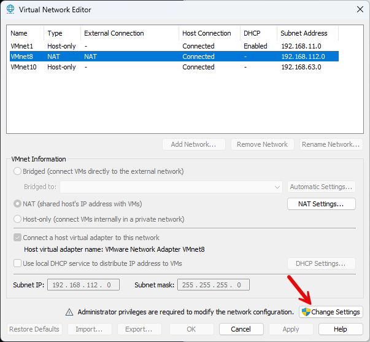
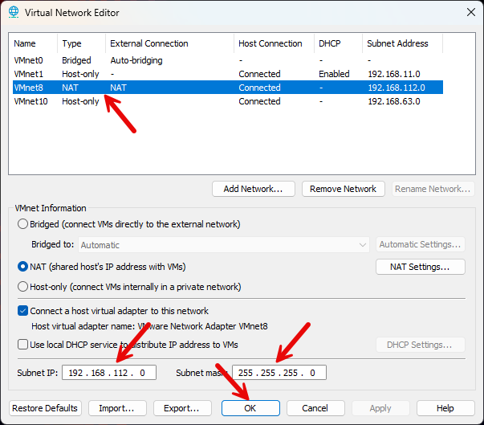
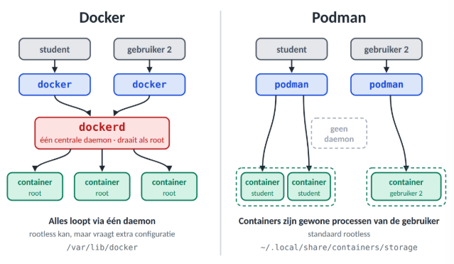
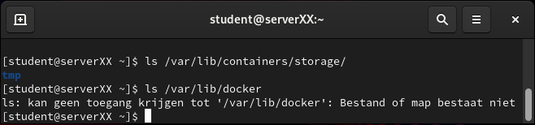
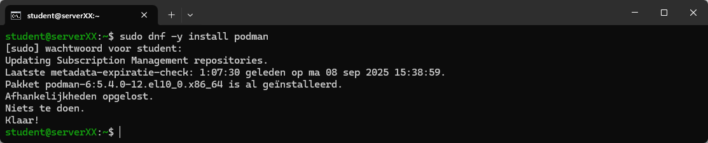
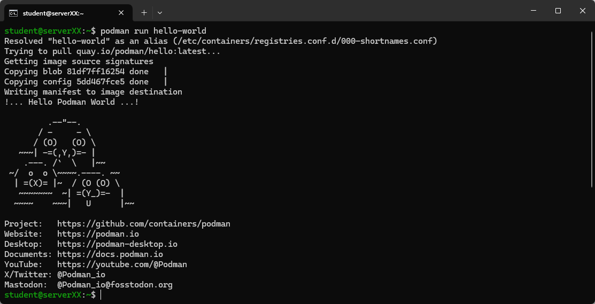
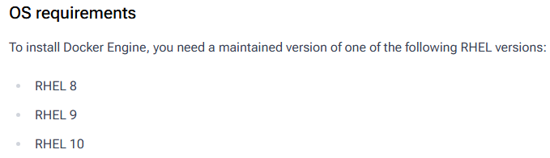
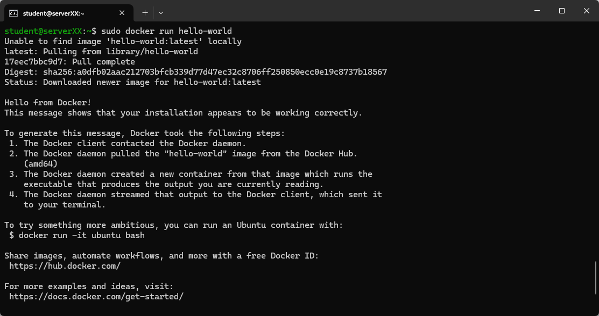

2 Installatie Docker en Podman¶
2.1 Doelstellingen¶
Na dit hoofdstuk beheerst de student het volgende:
-
uitleggen waarin Podman en Docker van elkaar verschillen, en waarom ze naast elkaar op hetzelfde systeem kunnen staan;
-
de twee virtuele machines server en client klaarzetten volgens de afspraken van de cursus;
-
nagaan of Podman aanwezig is op RHEL 10 en de installatie controleren met podman run hello-world;
-
Docker installeren op RHEL 10 door de repository van Docker toe te voegen en de nodige pakketten te installeren;
-
de Docker-service starten en automatisch laten opstarten met systemctl enable --now Docker;
-
de werking van Docker controleren met sudo docker run hello-world en uitleggen waarom sudo daarbij nodig is;
-
benoemen waar Docker en Podman hun images en containers bewaren.
2.2 Inleiding¶
We leren in dit hoofdstuk hoe je Docker en Podman installeert.
2.3 VM’s installeren¶
Gebruik hoofdstuk 1 om de VM’s in te stellen en maak zeker ook de snapshots!
Samenvattend:
2 VM’s met een schone installatie van RHEL 10 in VMware Workstation op je Windows-host, elk met 1 netwerkkaart die via NAT (VMnet8) met het internet verbonden is.
-
1ste VM
-
Naam: server[je_initialen]
-
IP-adres: 192.168.112.100
-
Gebruiker: student (met sudo-rechten)
-
-
2de VM
-
Naam: client[je_initialen]
-
IP-adres: 192.168.112.200
-
Gebruiker: student (met sudo-rechten)
-
-
Registreer de VM’s bij Red Hat zoals beschreven in hoofdstuk 1.
-
Kies voor een schijf van minimaal 100 GB voor elke VM.
Controleer ook de NAT-instellingen in VMware Workstation Pro (Edit, Virtual Network Editor)!


Maak best ook een reservekopie van de VM’s op een ander medium.
2.4 Docker versus Podman¶
Zoals eerder besproken is Podman een alternatief voor Docker zonder centrale daemon. Het gebruikt dezelfde containerstandaarden (OCI), maar containers draaien als gewone processen onder de gebruiker die ze start. Daardoor werkt Podman standaard rootless (veiliger) en is het eenvoudiger te integreren in systemen zonder centrale service. Docker kan ook rootless draaien, maar dat vraagt extra configuratie.
We installeren zowel Docker als Podman op RHEL 10.
2.5 Naast elkaar installeren¶
Docker en Podman kunnen naast elkaar op hetzelfde systeem staan, omdat Podman geen daemon gebruikt en containers als gewone processen draait.
Opgelet:
-
Docker en Podman hebben elk hun eigen opslag en netwerkconfiguratie (tenzij je expliciet dezelfde instellingen forceert). Images en containers van de ene tool zie je dus niet in de andere.
-
Docker gebruikt standaard /var/lib/docker, Podman gebruikt /var/lib/containers/storage (rootless: ~/.local/share/containers/storage).

Na de installatie van RHEL 10 zie je dat /var/lib/containers/storage bestaat en /var/lib/docker niet. Logisch: Podman is standaard geïnstalleerd, Docker niet.

2.6 Podman installeren¶
2.6.1 Installatie zelf¶
Red Hat promoot Podman sinds RHEL 8 als de standaard containertechnologie.
Podman wordt standaard ondersteund en is volledig geïntegreerd, ook in de documentatie en de support (zie Red Hat Enterprise Linux 10: Building, running, and managing containers).
Podman kan Docker-images gebruiken en de commando’s zijn grotendeels gelijk aan die van Docker (je kan zelfs “alias Docker=Podman” instellen).
Installatie gebeurt als volgt:
student@serverXX:~$ sudo dnf -y install podman

Zoals je ziet, is Podman al geïnstalleerd (standaard op RHEL 10).
2.6.2 Controle installatie¶
Voer het volgende commando uit:
student@serverXX:~$ podman run hello-world
Krijg je de onderstaande uitvoer, dan werkt Podman correct.

2.7 Docker installeren¶
2.7.1 Installatie zelf¶
Docker ondersteunt RHEL 10 officieel (zie Install Docker Engine on RHEL).

Hieronder staan de stappen beknopt beschreven, gebaseerd op de officiële Docker-documentatie voor RHEL (https://docs.docker.com/engine/install/rhel/).
- dnf-plugins-core package installeren:
student@serverXX:~$ sudo dnf -y install dnf-plugins-core
- Repository toevoegen
student@serverXX:~$ sudo dnf config-manager --add-repo https://download.docker.com/linux/rhel/docker-ce.repo
- Docker-pakketten installeren:
student@serverXX:~$ sudo dnf install docker-ce docker-ce-cli containerd.io docker-buildx-plugin docker-compose-plugin
- Docker-service starten en automatisch laten opstarten:
student@serverXX:~$ sudo systemctl enable --now docker
2.7.2 Controle¶
Voer het volgende commando uit:
student@serverXX:~$ sudo docker run hello-world
Krijg je de onderstaande uitvoer, dan werkt Docker.

Let op: sudo is hier nodig! De Docker-daemon draait als root en de gebruiker student heeft standaard geen toegang tot die daemon.